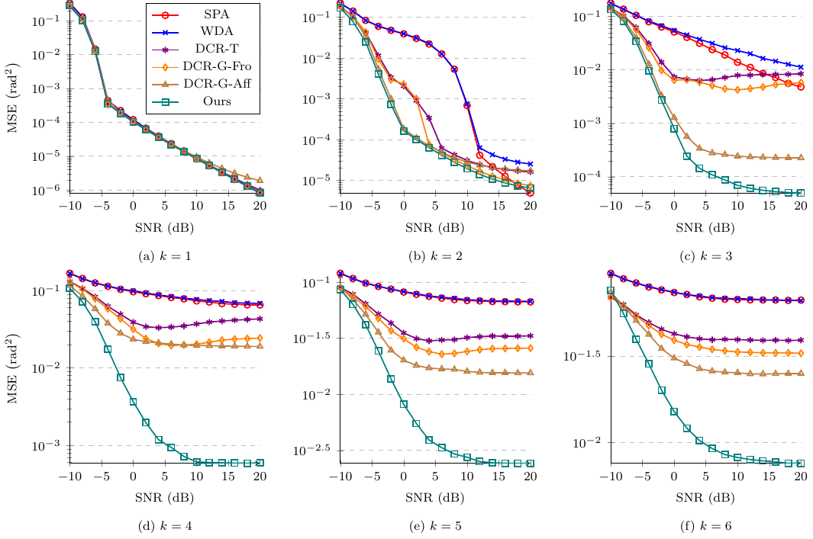

Kuan-Lin Chen
My name is Kuan-Lin Chen and I study a number of subjects in machine learning and signal processing.
- I am a Machine Learning Research Engineer at Apple.
- I received my Ph.D. in Electrical and Computer Engineering from UC San Diego in 2024.
- I am fortunate to be advised by Bhaskar D. Rao, an Ericsson Endowed Chair and Distinguished Professor, who leads the UCSD DSP Lab.
- My research was supported by the IEEE SPS Scholarship, the Qualcomm Innovation Fellowship, and the Innovative Research Grants Award from the Kavli Institute for Brain and Mind.
- I received my B.S.E. degree from the Department of Electrical Engineering at the National Taiwan University in 2016.
During my Ph.D., I worked in several areas of machine learning and signal processing, including neural networks, deep learning, representation learning, active learning, adaptive filtering, DoA estimation, speech enhancement, microphone array processing, feedback/echo cancellation, active noise cancellation, and hearing aids.
News
- [June 2024] I defended my dissertation, titled Deep Learning with Estimation and Complexity Guarantees for Signal Processing, on June 3, 2024.
- [June 2024] I received the Best TA Award from the ECE department.
- [Oct. 2023] I received the IEEE SPS Scholarship.
- [Apr. 2023] I was accepted to the ICASSP Rising Stars in Signal Processing program.
- [Oct. 2022] I received the NeurIPS Scholar Award.
- [Aug. 2022] I, along with Ross Greer, received the Qualcomm Innovation Fellowship.
- [June 2021] I, along with Tzu-Han Zoe Cheng, received the Innovative Research Grants Award from the Kavli Institute for Brain and Mind. Old news
Publications
-
IEEE Transactions on Signal Processing 2025
-
ICASSP 2023


Dissertation
-
Ph.D. dissertation, University of California, San Diego, 2024
Work experience
- [Sept. - Dec. 2022] Part-time Student Researcher at Meta Reality Labs Research, Redmond, WA (remote)
- [June - Sept. 2022] Research Scientist Intern at Meta Reality Labs Research, Redmond, WA
- [June - Sept. 2021] Research Intern at Facebook Reality Labs Research, Redmond, WA (remote)
- [June - Sept. 2019] Intern at Qualcomm, San Diego, CA
Teaching
- [Fall 2023] Teaching assistant of ECE 174 (Introduction to Linear and Nonlinear Optimization with Applications) taught by Prof. Piya Pal.
Services
Reviewers
- Conference on Neural Information Processing Systems (NeurIPS) 2023
- International Conference on Learning Representations (ICLR) 2024
- International Conference on Machine Learning (ICML) 2024, 2025
- AAAI Conference on Artificial Intelligence (AAAI) 2025
- IEEE International Conference on Acoustics, Speech and Signal Processing (ICASSP) 2021-2025
- IEEE International Workshop on Machine Learning for Signal Processing (MLSP) 2021-2024
- International Joint Conference on Neural Networks (IJCNN) 2025
- The Journal of the Acoustical Society of America (JASA) 2022, 2024
- Neural Networks (2025)
Session Chairs
- IEEE ICASSP 2025
Other Presentations
- Empowering
Speech Processing
with Deep Neural Networks: Theory and Applications
ICASSP Rising Stars Workshop, Rhodes, Greece, June 2023 - Improved Bounds on
Neural Complexity for Representing Piecewise Linear Functions
Spring 2023 CWC Research Review, Rady School of Management, UC San Diego, May 2023 - ResNEsts and
DenseNEsts: Block-based DNN Models with Improved Representation Guarantees
5G and Beyond Forum, Innovating 5G - Envisioning 6G, Atkinson Hall, UC San Diego, November 2021